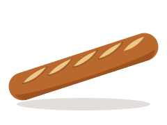
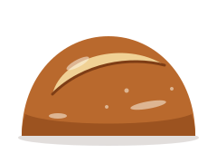
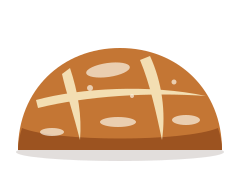
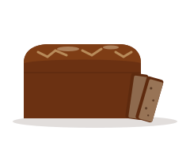
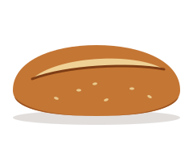
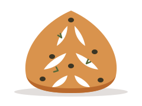
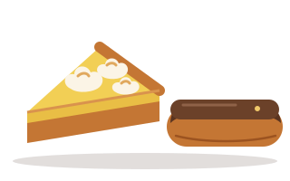
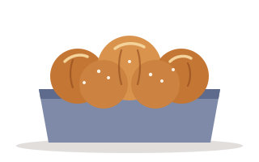
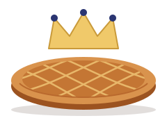
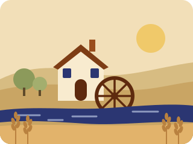

Boulangerie-pâtisserie au levain
Du levain, trois fournées par jour.
Au 12 rue Imaginaire, on pétrit la nuit et on défourne à 7 h, 11 h 30 et 17 h. Votre pain est toujours du jour, et souvent encore tiède.
Ouvert 6 jours sur 7
Mardi au samedi 7 h–20 h, dimanche 7 h–13 h 30
Fermé le lundi
Les fournées du mardi au samedi
- 7 h pour le petit-déjeuner
- 11 h 30 pour le déjeuner
- 17 h pour le pain du soir
Quand passer
Les horaires
Ouvert du mardi au samedi de 7 h à 20 h, le dimanche jusqu’à 13 h 30.
Fermeture annuelle trois semaines en août : les dates sont affichées en boutique dès le mois de juin.
| Lundi | Fermé, le fournil se repose |
|---|---|
| Mardi | 7 h – 20 h |
| Mercredi | 7 h – 20 h |
| Jeudi | 7 h – 20 h |
| Vendredi | 7 h – 20 h |
| Samedi | 7 h – 20 h |
| Dimanche | 7 h – 13 h 30 |
Votre pain mis de côté
Appelez avant 16 h : on vous garde votre pain jusqu’à la fermeture, sans supplément. Pratique quand on sort tard du travail.
01 99 00 41 07Aujourd’hui au comptoir
Les pains du jour, sortis du four ce matin.
Six pains au levain naturel, façonnés un par un. Ce qui manque le soir, c’est qu’on l’a vendu : pas de stock, pas de surgelé, et jamais le pain de la veille.
-

À chaque fournée
Baguette tradition
Farine de blé T65 du moulin, levain et 24 h de pousse au froid. Une croûte qui chante, une mie crème aux alvéoles irrégulières.
250 g1,30 €
-

Notre signature
La Lune
Miche ronde au levain, grignée en croissant. Mie souple, légèrement acidulée, qui se garde cinq jours dans un torchon.
750 g6,40 €
-

7 h et 17 h
Campagne au levain
Blé et une pointe de seigle, 36 h de fermentation. Vendu entier ou à la coupe, au poids, comme vous voulez.
800 g · ou 7,20 € le kilo5,80 €
-

7 h
Seigle
100 % seigle, cuit en moule. Dense, profond, un peu sucré : parfait avec du beurre salé, des huîtres ou un fromage de chèvre.
500 g4,90 €
-

11 h 30
Petit épeautre
Une céréale ancienne au goût de noisette, pauvre en gluten et souvent mieux digérée. Graines de lin et de tournesol.
500 g6,90 €
-

Le samedi seulement
Fougasse olives & romarin
Pâte à tradition, huile d’olive, olives noires dénoyautées à la main. À partager à l’apéritif, ou pas.
la pièce3,80 €
Et aussi, selon les jours
- Ficelle1,10 €
- Pain de mie au lait, tranché4,50 €
- Complet aux graines, 400 g4,20 €
- Figues & noisettes, 300 g4,60 €
- Couronne de tradition (dimanche)5,90 €
- Brioche nature au beurre7,50 €
Prix TTC en vigueur depuis le 1er septembre 2026. On tranche votre pain sur demande, sauf la tradition : elle se déchire.
Viennoiseries & pâtisseries
Pur beurre, tourées à la main chaque nuit.
Joachim, notre pâtissier, travaille un beurre de baratte et les fruits du marché d’à côté. Les viennoiseries sortent à 7 h, les pâtisseries dès 10 h.
Viennoiseries
- Croissant au beurreFeuilletage tourné à la main, 27 couches, croustillant jusqu’au cœur.1,40 €
- Pain au chocolatDeux barres de chocolat noir à 64 %.1,60 €
- Croissant de luneNotre croissant au levain, farine de sarrasin et miel de Brie.2,90 €
- Croissant aux amandesSirop léger, crème d’amande maison, amandes effilées.2,70 €
- Chausson aux pommesCompote de pommes du verger, à peine sucrée.2,80 €
- Pain aux raisinsCrème pâtissière vanille, raisins macérés au thé noir.2,40 €

Pâtisseries
- Flan vanillePâte feuilletée, crème cuite au four à sole. La part.3,90 €
- Tarte citron meringuéeCitrons jaunes, meringue italienne dorée au chalumeau.4,80 €
- Éclair caféCafé torréfié dans le quartier, glaçage sans colorant.4,20 €
- Paris-BrestPraliné noisette maison, à 60 % de fruits secs.5,40 €
- Nuit noireMousse chocolat noir, cœur praliné, sablé breton.5,60 €
- Cookie sarrasin & chocolatCroustillant au bord, fondant au milieu.2,50 €

Le dimanche
- Brioche feuilletée à partagerSix boules à détacher, sucre perlé. Pour 6.14,00 €
- Tarte aux fruits du momentEn ce moment : figues et framboises. Pour 6.24,00 €
- Babka chocolat-noisettePâte briochée au levain, roulée et tressée.12,00 €
- Pain perdu briochéDoré au beurre, caramel au sel de mer. La part.3,50 €
Sur commande
Pour vos grandes tablées, on s’en occupe.
Anniversaire, baptême, Épiphanie ou réveillon : commandez au moins 48 h à l’avance, on prépare tout la veille au soir.
-
Toute l’année · 48 h à l’avance
Gâteaux de fête
Nuit noire, tarte au citron, Paris-Brest géant, et fraisier de mai à juillet. Bougies et petit mot en chocolat offerts.
- 4 parts 22 €
- 6 parts 32 €
- 8 parts 42 €
- 12 parts 60 €
-

Tout le mois de janvier
Galettes des rois
Frangipane, pomme-noisette, ou briochée à la fleur d’oranger. Les fèves en porcelaine sont dessinées chaque année par Odile, céramiste rue du Four-de-Nuit.
- 4 parts 16 €
- 6 parts 24 €
- 8 parts 32 €
-
Décembre · commandes jusqu’au 20
Bûches de Noël
Trois parfums cette année : marron-cassis, chocolat-praliné et vanille-poire. Retrait les 23, 24 et 31 décembre.
- 6 parts 36 €
- 8 parts 46 €
Comment commander
- Appelez-nous au 01 99 00 41 07, passez au comptoir, ou remplissez ce formulaire.
- On vous rappelle sous 24 h (sauf le lundi) pour confirmer le parfum, la taille et l’heure de retrait.
- Vous passez le chercher et vous réglez en boutique. Pas d’acompte en dessous de 60 €.
Une allergie, un régime particulier ? Dites-le-nous dans le message : on vous répondra franchement sur ce qu’on peut faire, ou pas.
L’histoire du fournil
On travaille la nuit, comme la lune.
Fournil Lune a ouvert en mars 2016, dans l’ancienne boulangerie du 12 rue Imaginaire, fermée depuis trois ans. Maëlle Ternier, boulangère, et Joachim Brévent, pâtissier, s’étaient rencontrés en apprentissage. Ils voulaient un fournil à l’ancienne, ouvert sur la rue, où l’on voit le pain se faire.
Notre levain s’appelle Pierrot. Il est né le jour de l’ouverture, d’un peu de farine de seigle et d’eau, et on le nourrit deux fois par jour depuis dix ans. Dans nos pains, pas de levure ajoutée : juste lui, du temps, de l’eau et du sel de mer.
Les farines viennent du Moulin des Trois-Ormes, à Courtilly-en-Brie, à 64 km d’ici. Antoine, le meunier, écrase sur meule de pierre des blés cultivés à moins de 20 km du moulin. Chaque automne, on va goûter la nouvelle récolte avec lui.
Maëlle & Joachim

- 10 ansque Pierrot fait lever nos pains
- 36 hde fermentation pour la campagne
- 64 kmentre le moulin et le fournil
- 0additif, améliorant ou pâte surgelée
Une nuit au fournil
-
On nourrit Pierrot
Farine de seigle et eau tiède. Il double de volume en quatre heures.
-
Pétrissage lent
Huit minutes au pétrin à bras, puis la pâte se repose en bacs.
-
Façonnage à la main
Chaque pain est pesé, boulé, puis posé dans son panier en osier.
-
Au four à sole
250 °C sur la pierre, un nuage de vapeur, et les grignes s’ouvrent.
-
On lève le rideau
Les premières baguettes sont encore trop chaudes pour être tranchées.
Bon à savoir
Les questions qu’on nous pose au comptoir.
Pouvez-vous me garder du pain ?
Oui. Appelez avant 16 h et dites-nous ce que vous voulez : on le met de côté avec votre nom jusqu’à la fermeture. Le dimanche, appelez avant 11 h.
Avez-vous du pain sans gluten ?
Non, et on préfère vous le dire franchement : le fournil est couvert de farine de blé du matin au soir. Le petit épeautre et le seigle contiennent moins de gluten, mais ils en contiennent.
Peut-on payer par carte ?
Oui, dès 1 €, sans contact compris. Nous acceptons aussi les espèces et les titres-restaurant.
Livrez-vous les restaurants et les entreprises ?
Nous fournissons quelques tables du quartier, à vélo, avant 10 h. Écrivez-nous avec vos besoins par semaine et on regarde ensemble ce qui est possible.
Que devient le pain invendu ?
Il part le soir même à l’association de quartier de la rue du Four-de-Nuit, ou devient pain perdu et chapelure. Rien ne finit à la poubelle.
3 minutes à pied depuis le métro
Accès
À l’angle du passage des Meuniers.
- Adresse
- 12 rue Imaginaire, 75011 Paris
- Métro
- Sainte-Aubane (ligne 9), sortie avenue Sainte-Aubane, puis 3 minutes à pied
- Bus
- Arrêt Square des Tilleuls, juste en face
- À vélo
- Arceaux devant la boutique et stationnement au coin du boulevard
- Accessibilité
- Une petite marche à l’entrée : sonnez, on vous sert sur le pas de la porte
- Paiement
- Carte dès 1 €, espèces, titres-restaurant
Contact
Un mot, une question ? Écrivez-nous.
Pour une commande urgente, appelez plutôt : le comptoir répond plus vite que la boîte mail, surtout le samedi matin.